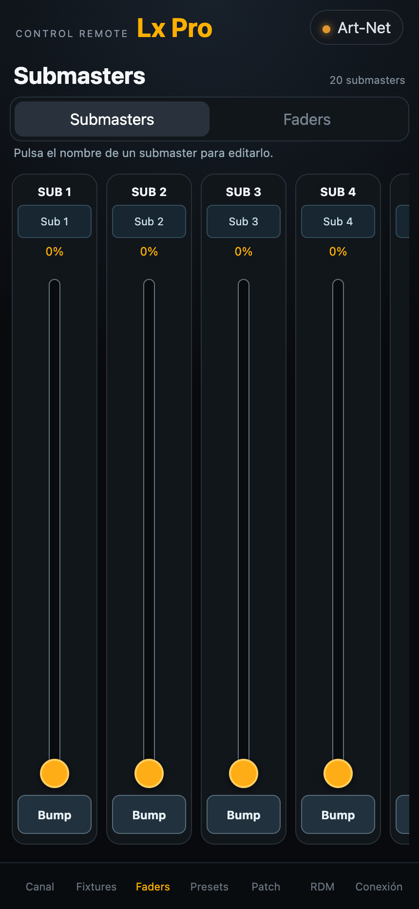
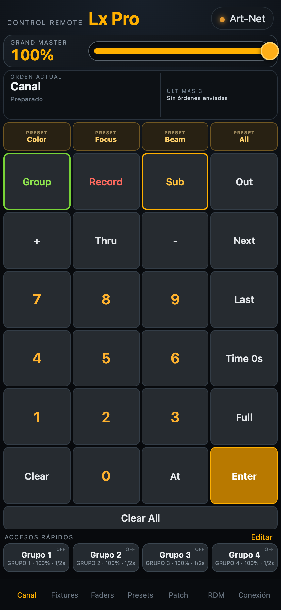
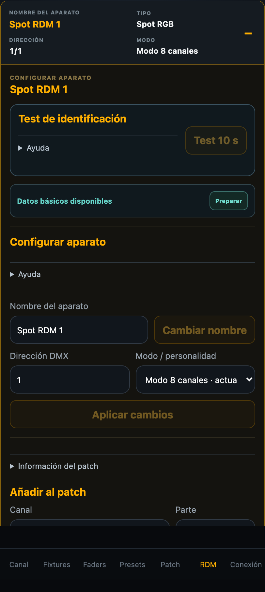
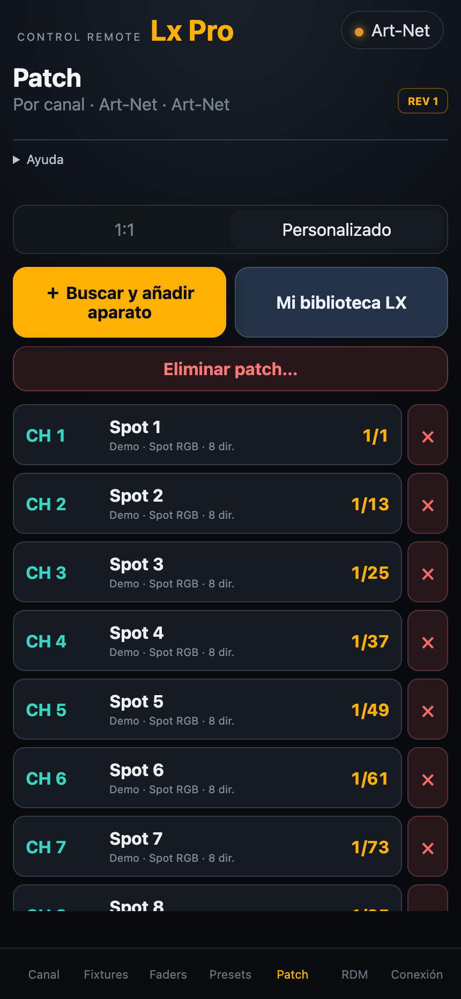
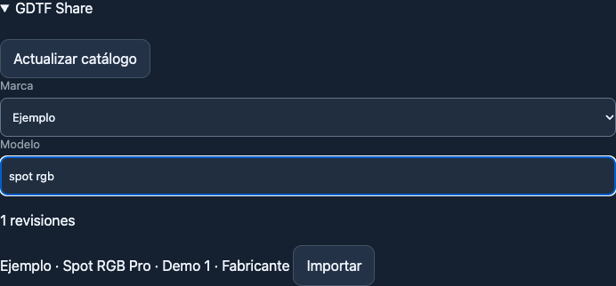

Control al alcance
Selecciona canales y ajusta intensidades desde el mando. Trabaja con OSC, Art-Net o sACN según tu instalación.
Explorar el control OSC ↗CONTROL DE ILUMINACIÓN · A PIE DE ESCENARIO
Ajusta la luz donde importa. Controla canales, mueve faders y configura tus equipos desde tu dispositivo, conectado a tu red de iluminación.
iPhone · iPad · Android


Una aplicación.
Tu red de iluminación.
DEL MANDO AL EQUIPO
Comprueba el resultado desde el escenario y ajusta los equipos mientras los tienes a la vista.
Selecciona canales y ajusta intensidades desde el mando. Trabaja con OSC, Art-Net o sACN según tu instalación.
Explorar el control OSC ↗Controla canales y submasters con faders. Una forma directa de ver cómo responde la iluminación.
Ver el manual de uso ↗Organiza tu patch y accede a los parámetros de los fixtures con las herramientas de la versión completa.
Conocer el flujo de fixtures ↗RDM · INCLUIDO EN LA VERSIÓN COMPLETA
Descubre, identifica y configura los aparatos compatibles desde ProL. Lleva la gestión de tu instalación al mismo dispositivo con el que controlas la luz.
Requiere equipos y transporte RDM compatibles. Las funciones disponibles dependen de la instalación.

DENTRO DE PROL
Canales, faders y patch. Herramientas reconocibles para trabajar desde el dispositivo que llevas contigo.
Explora el manual completo ↗
FIXTURES · ART-NET Y sACN
Busca y descarga fixtures desde la aplicación para tus instalaciones Art-Net y sACN. Consulta el catálogo actualizado de GDTF Share por marca y modelo, elige la personalidad y añádela a tu biblioteca y al patch.
Ver cómo descargar e importar fixtures ↗Consulta integrada disponible en iPhone y iPad. En Android, descarga el archivo desde el navegador e impórtalo en la aplicación. La consulta del catálogo requiere Internet. Los archivos importados se guardan en tu biblioteca local.

ELIGE CÓMO TRABAJAR
Prueba gratuita de 7 días prevista para el lanzamiento del sistema de licencias. Precios orientativos, pendientes de confirmación.
PAGO ÚNICO
9,99 €
Una compra. Tus controles esenciales.
No incluye RDM, acceso avanzado ni las demás páginas de control.
Consultar disponibilidad ↗LICENCIA DE UN AÑO
29,99 € / año
Todas las herramientas de ProL.
Para trabajar con el control y la configuración de tu instalación desde una misma aplicación.
Me interesa la versión completa ↗Está prevista la restauración de compras entre dispositivos. El sistema de compras y licencias está en preparación.
ProL utiliza la red local para comunicarse mediante OSC, Art-Net o sACN. La configuración y las funciones dependen del equipo y del perfil elegido. Consulta las guías del manual para preparar tu instalación.
La versión completa y una instalación con equipos y transporte RDM compatibles. Consulta la guía de tu protocolo para conocer la configuración y las funciones disponibles.
Está prevista la transferencia o restauración de las compras entre dispositivos. La licencia anual conservará su fecha de vencimiento. Esta función se activará con el sistema de compras.
En el manual de uso encontrarás las guías por protocolo. También tienes disponible el plugin grandMA3 y su guía. La compatibilidad depende del equipo, su versión y su configuración.
TU PRÓXIMO MONTAJE, CON PROL
Consulta la disponibilidad de la aplicación y encuentra la licencia que encaja con tu forma de trabajar.
Contactar con ProL ↗